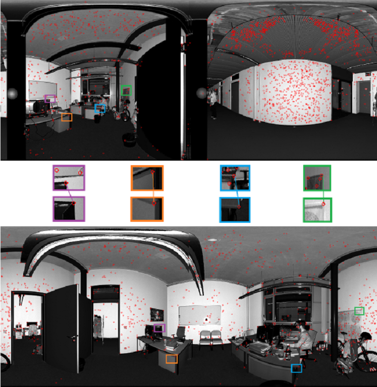
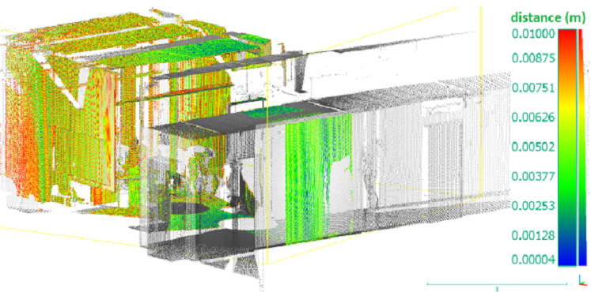

Laser scanning is a widely used survey technique which can be used for deformation analysis or 3D model creation. However, if scene is scanned from several points of view, the problem of point cloud correspondence arises. Registration of point clouds is an automatic procedure of data alignment, it finds matches between those parts of point clouds which are representations of the same objects. There are several known methods of registration such as ICP and 4PCS. Current project suggests a new one: an algorithm of registration based on radiometric features.
Basic idea of current method is generation of an image from every point cloud, calculation of specific members by keypoint detector and definition of correspondences based on keypoint descriptors.
Final registration result is very accurate:
